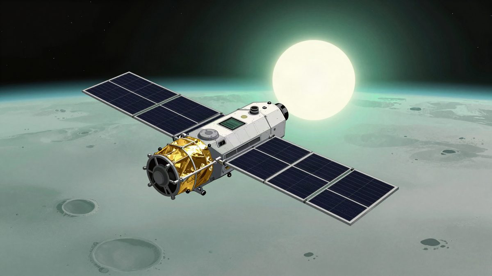

BepiColombo je nakon osam godina i oko 10 milijardi kilometara stigao u orbitu Merkura

Europsko-japanska misija BepiColombo završila je manevar kočenja i ušla u gravitacijsko polje Merkura, nakon otprilike osam godina i oko 10 milijardi kilometara puta. Dolazak je zbog problema s električnim pogonom kasnio otprilike godinu dana. Puna znanstvena promatranja s oba orbitera očekuju se na proljeće iduće godine.
Europsko-japanska misija BepiColombo uspješno je završila manevar kočenja i ušla u gravitacijsko polje Merkura. Nakon otprilike osam godina putovanja sonda je stigla na cilj, a za to je vrijeme prešla oko 10 milijardi kilometara.
BepiColombo je lansiran 19. listopada 2018. s lansirnog središta Kourou u Francuskoj Gvajani, na raketi Ariane 5. Misiju zajednički provode Europska svemirska agencija ESA i japanska agencija JAXA.
Kašnjenje od godinu dana
Putovanje je izvorno bilo planirano na otprilike sedam godina. U 2024. pojavili su se problemi sa snagom električnog pogona, pa je dolazak pomaknut za otprilike godinu dana.
Dva orbitera
Misija se sastoji od dva istraživačka aparata: europskog Mercury Planetary Orbitera (MPO) i japanskog Mercury Magnetospheric Orbitera (MMO), poznatog i kao Mio. Služe za proučavanje površine i unutarnje građe Merkura, njegova magnetskog polja i magnetosfere te međudjelovanja planeta sa Sunčevim vjetrom.
Prije početka rada potrebni su još neki manevri i priprema aparata. Puna znanstvena promatranja s oba orbitera očekuju se na proljeće iduće godine. Misija bi znanstvenicima trebala pomoći da bolje razumiju planet najbliži Suncu i uvjete u kojima su nastali zemaljski planeti.
Voyager 1 na jedan svjetlosni dan
Četiri dana prije dolaska BepiColomba u orbitu Merkura još je jedan svemirski aparat dosegao prekretnicu. NASA-in Voyager 1 udaljio se od Zemlje na jedan svjetlosni dan i ostao najdalji objekt koji je čovjek poslao u svemir.
Za BepiColombo je najzahtjevniji dio puta završen, a sada slijedi priprema za znanstveni rad oko Merkura.
Izvor: iXBT
Povezani članci
- Mercor vrijedi oko 18 milijardi eura, a svaki od trojice osnivača ima oko 3,9 milijardi eura imovine12. studenoga 2026.
 Knight Capital je za 45 minuta izgubio oko 460 milijuna dolara zbog koda koji devet godina nitko nije pokrenuo18. studenoga 2026.
Knight Capital je za 45 minuta izgubio oko 460 milijuna dolara zbog koda koji devet godina nitko nije pokrenuo18. studenoga 2026.- Kina: GPS tracker ispod auta da bi "slučajno" naletio na simpatiju, dobio je uvjetnu kaznu12. studenoga 2026.